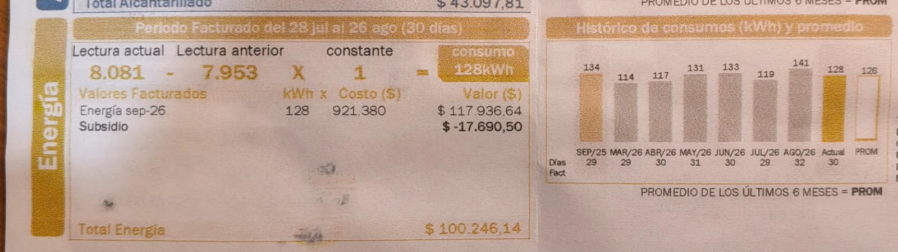

Historial de consumo según factura

| Mes | Días facturados | Consumo (kWh) |
|---|---|---|
| Marzo 2026 | 29 | 114 kWh |
| Abril 2026 | 30 | 117 kWh |
| Mayo 2026 | 31 | 131 kWh |
| Junio 2026 | 30 | 133 kWh |
| Julio 2026 | 29 | 119 kWh |
| Agosto 2026 | 32 | 141 kWh |
| Septiembre 2026 (Actual) | 30 | 128 kWh ($100.246 COP) |
| Promedio últimos 6 meses | 126 kWh | |
Comparación: Equipos medidos vs. Factura real
Explicación de la diferencia (~52,84 kWh/mes)
En la página Equipos de mi casa calculamos el consumo aproximado de 4 electrodomésticos (AirFryer, Licuadora, Computador y Televisor), los cuales suman 75,16 kWh al mes. Sin embargo, la factura real de cobro registra 128 kWh en el periodo actual.
Existe una diferencia de aproximadamente 52,84 kWh/mes debido a:
- Iluminación del hogar: Bombillos encendidos durante la noche en habitaciones, cocina, baños y zonas comunes.
- Consumo vampiro / Standby: Módem de internet/Wi-Fi funcionando 24/7, cargadores de celular conectados continuamente y receptores de TV.
- Otros electrodomésticos no medidos: Refrigerador/Nevera (que funciona interrumpidamente las 24 horas del día), lavadora y pequeños aparatos eléctricos.
Recomendaciones de ahorro para mi familia
1. Optimizar el uso del Computador
Representa 10,15 kWh a la semana. Configurar la suspensión automática tras 5 minutos de inactividad y apagar la pantalla durante los descansos o almuerzos.
2. Eficiencia en la AirFryer
Con sus 1500W de potencia, es recomendable evitar el precalentamiento prolongado e ingresar las porciones en tandas continuas para aprovechar el calor residual.
3. Controlar el Consumo Vampiro
Desconectar multicontactos, cargadores y televisores durante la noche para reducir la brecha de 52 kWh que no pertenecen a los electrodomésticos principales.